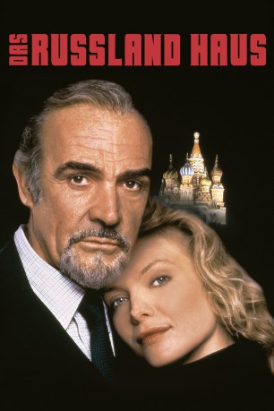
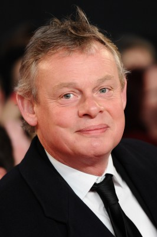
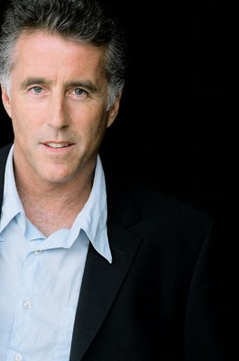

#6720 Das Russland-Haus
Alternativ: The Russia House
 
 IMDB-Wertung: 6.1 / 10
IMDB-Wertung: 6.1 / 10  Metascore: 0
Metascore: 0 
Dem britischen Verleger Barley Blair wird in Moskau über die Russin Katja ein Manuskript des Sowjet-Physikers Dante zugespielt. In diesem Dossier beschreibt er die Rüstungslage der Glasnost-UdSSR als so desolat, daß der Westen - seiner Übermacht versichert - das Wettrüsten stoppen möge. Das Papier gelangt allerdings an den britischen Geheimdienst, der wiederum - mißtrauisch wie stets - Blair auf Dante ansetzt. Blair entdeckt während dieses Auftrags seine Liebe zu Katja und sein respektvolles Verständnis für Dante. Als sich der Widerspruch zwischen Blairs Gefühlswelt und seinem Agentenauftrag zuspitzt, wagt er ein gefährliches Doppelspiel.
Jahr: 1990
Dauer: 123 Minuten
FSK: 12
Land: USA Studio: MGMTonspuren:
Untertitel: Deutsch,
Auflösung: 1080p (1920x816) Größe: 11161 MB
Genre: Thriller, Drama, Liebe
Regisseur: Fred Schepisi
Drehbuch: John le Carré
Soundtrack:
Darsteller:
 Sean Connery als Barley
Sean Connery als Barley Michelle Pfeiffer als Katya
Michelle Pfeiffer als Katya Roy Scheider als Russell
Roy Scheider als Russell James Fox als Ned
James Fox als Ned John Mahoney als Brady
John Mahoney als Brady Michael Kitchen als Clive
Michael Kitchen als Clive J.T. Walsh als Quinn
J.T. Walsh als Quinn- Ken Russell als Walter
 David Threlfall als Wicklow
David Threlfall als Wicklow Klaus Maria Brandauer als Dante
Klaus Maria Brandauer als Dante Nicholas Woodeson als Niki Landau
Nicholas Woodeson als Niki Landau-  Martin Clunes als Brock
 Ian McNeice als Merrydew
Ian McNeice als Merrydew Colin Stinton als Henziger
Colin Stinton als Henziger-  Christopher Lawford als Larry
 Blu Mankuma als Merv
Blu Mankuma als Merv- Tuck Milligan als Stanley
 Jay Benedict als Spikey
Jay Benedict als Spikey- Martin Wenner als Scientist - Whitehall
- Simon Templeman als Psychoanalyst - Whitehall
- Kate Lock als Jacky
- Rob Freeman als Hoover
 David Ryall als Colonial Type
David Ryall als Colonial Type Constantine Gregory als KGB Interviewer
Constantine Gregory als KGB Interviewer Mac McDonald als Bob
Mac McDonald als Bob- Denys Hawthorne als Paddy
- George Roth als Cy
- Peter Mariner als U.S. Scientist
- Ellen Hurst als Anna
- Peter Knupffer als Sergey
- Nikolai Pastukhov als Uncle Matvey
- Jason Salkey als Johnny
- Eric Anzumonyln als Nasayan
- Daniel Wozniak als Zapadny
- Giorgi Anjaparidze als Yuri
- Vladek Nikiforov als Tout
- Mark La Mura als Todd
- David Timson als George
- Yelena Stroyeva als Anastasia
- Fyodor Smirnov als Watcher
- Pavel Sirotin als Watcher
- Paul Jutkevitch als Misha
- David Henry als Jr. Minister - Whitehall
- Paul Rattee als Army Officer - Whitehall
- Gina Nikiforov als Russian Guest
- Raisa Ryazanova als Russian Guest
- Charlotte Cornwell als Charlotte
- Craig Crosbie als Technician
- Keith Edwards als Hoover
- Michael Fitzpatrick als Hoover
Datei: X:\1990\Russland-Haus, Das (1990, FSK12, 1920x816).mkv seit 09.08.2017
Festplatte: HD 1987-1991
 Es gibt insgesamt 52 Filme in der Gruppe '1990'
Es gibt insgesamt 52 Filme in der Gruppe '1990'